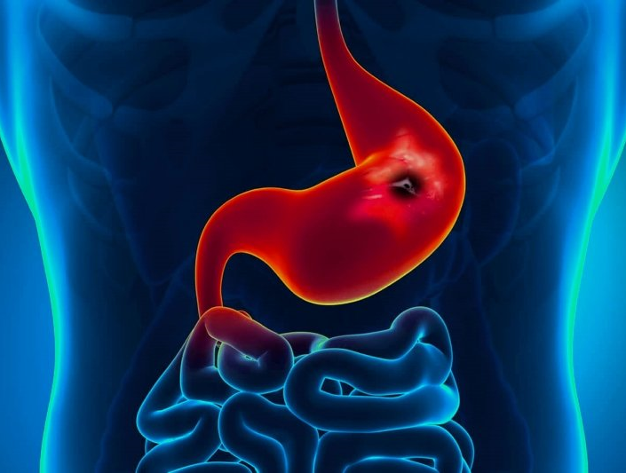
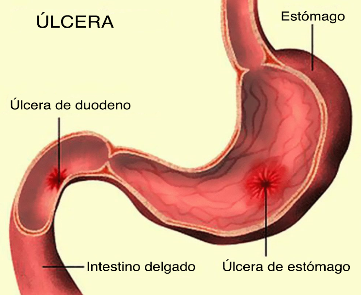
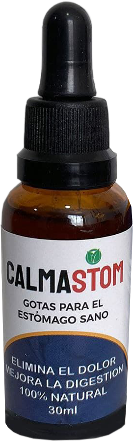

Cómo curé LA ÚLCERA DE ESTÓMAGO y DE DOUDENO en 1 semana
Cómo curé una úlcera gastrointestinal y 12 ERGE en 1 semana
Nunca pensé que escribiría un llamamiento público, pero no puedo evitar presumir de mi descubrimiento. ¡Voy a adelantarme y decir que por fin he encontrado un método que realmente funciona para deshacerse de las úlceras gástricas y duodenales!
Así que, queridos míos, armaos de paciencia y tomadlo con calma. Estoy seguro de que, como yo, está cansado de gastar su dinero y su tiempo en medicamentos inútiles que no sirven para nada, sino que sólo tiran el dinero, perdón, por el retrete. Ahora mismo, coge todas las pastillas y tíralas a la basura, ¡porque ya no las necesitas! Nunca. ¡Todas las úlceras, gastritis y cualquier enfermedad de los órganos digestivos desaparecerán para siempre!
¿Lo has tirado? Entonces, ¡comencemos!
Me diagnosticaron una úlcera de estómago y duodeno hace cuatro años. Tenía Helicobacter pylori y una mucosa débil. Como he dicho antes, he probado todo lo que hay hoy en día. Periódicamente mejoraba y creía que la enfermedad había remitido. Sin embargo, seguía volviendo. Y cuanto más lejos llegaba, peor era.
Y lo peor fueron las constantes visitas al médico, los dolores de estómago, las dietas. Aumento de la secreción de jugos gástricos y bilis a cualquier hora del día: ¡mi estómago y mi duodeno se estaban destruyendo! Varias veces hubo hemorragias, incluso temí que llegara a una operación o algo peor. En medio de todo esto, mi sistema inmunológico se debilitó. Me sentía completamente destrozada, débil, me fatigaba rápidamente, tenía sueño todo el tiempo. No quería vivir.
Los médicos seguían tirando la toalla y recetando medicamentos cada vez más caros. La sensación de que estaban desviando el dinero a propósito.
Todo bien con el dinero, ¡si sólo funcionara! ¡Pero no tuvo ningún efecto! Sólo hubo mejoras temporales y muchos efectos secundarios.
La fe en la medicina tradicional, perdida Siguiendo...

Cuando perdí la fe en la medicina tradicional, fui en busca de todos los métodos de tratamiento no convencionales que existían.
-
Acudí a curanderos, escuché todo tipo de susurros y demás... ¡en vano!
-
He buscado todo tipo de recetas antiguas, he recogido hierbas yo mismo, las he secado, las he mezclado y las he preparado para tomar infusiones... ¡sin ayuda!
-
Compré suplementos dietéticos anunciados que prometían curación - ¡y de nuevo tiré mi dinero!
-
Me apunté a sesiones con magos y hechiceros hereditarios y visité a todo tipo de videntes. Imagínate, a veces se confundían para saber de qué dolencia quería curarme.
-
Mi marido me envió a un centro de rehabilitación, donde me sometí a un tratamiento de acupuntura. También probé el tratamiento quiropráctico visceral de los órganos internos. No sirvió de nada.
Recompensa de Dios por mi paciencia
A pesar de todos mis fracasos, no me rendí. Seguí buscando y probando nuevos métodos.
No perdí la esperanza a pesar de la inutilidad de mis esfuerzos. Aunque no me quedaban fuerzas, para ser sincero.
Así que me prometí a mí misma que, si encontraba una cura, haría todo lo posible para contárselo al mayor número de personas que sufrieran úlceras. Así como otras enfermedades digestivas
Supongo que Dios me ha recompensado por mi paciencia y me ha enviado ayuda desde arriba para curar una úlcera.
¿Se ha encontrado realmente una cura para las úlceras?
Por casualidad, me encontré con un blog de Internet en el que una "desafortunada amiga" me contaba cómo había resuelto un problema similar y me remitía a un sitio web en el que había obtenido esta valiosa información.
Fui a este sitio web Calma Stom — una solución natural que cura con sus propiedades inusuales.
Estas gotas están creadas a partir de ingredientes naturales que curan el cuerpo de cualquier enfermedad gastrointestinal - es un proceso natural.
Me llamó especialmente la atención que en la página web se diga que estas gotas curan completamente y no parcialmente. En otras palabras, se pone en marcha una especie de mecanismo de recuperación. Todas las células enfermas y las infecciones desaparecen, ¡y no importa si las conoces o no! Simplemente, mejora.
Al principio, pensé (como probablemente estés pensando ahora): ¡qué tontería! Fue sólo otro robo de dinero. Sin embargo, decidí darle a Calma Stom una mirada adecuada.
Además, el precio del elixir era tan ridículo que era difícil llamarlo desvío de dinero.
Pero no me preocupaba el dinero: ¡he gastado unas 300 veces más en otros métodos! Estaba preocupado por otra cosa. Es decir, ¿habrá resultados?
Fui a la página web oficial de Calma Stom - ¡y pedí!
Incluso no se lo dije a nadie, porque tenía miedo de que me ridiculizaran en casa y en el trabajo. Y sólo cuando el resultado fue obvio, decidí contar el secreto a todo el mundo. O mejor dicho, no lo decidí, tuve que hacerlo: la gente no dejaba de preguntarme qué había pasado para que floreciera y volviera a estar sana. No pude evitar compartir mi felicidad
Resultados. ¿Será que desapareció la úlcera del estómago y de duodeno?
Parece mentira, pero me sentí mejor ya al segundo día de tomar las gotas. Por supuesto, aún no me curé por completo, pero me sentí llena de energía y de fuerzas. Fue más fácil respirar, moverme, casi desapareció una sensación no confortable en el área del estómago. Por alguna razón quise sonreír y cantar.
Al 4 día de consumo empecé a sentir ligereza después de comer, no tuve más sensación de dueño y cansancio, ya estaba más alegre, tuve fuerzas para conversar y pasear por la calle.
Unas 3 semanas más tarde sentí que ya no necesito dietas ni pastillas. Desaparecieron todos los síntomas de la úlcera del estómago y de duodeno. LA ÚLCERA HA SIDO CURADA. No necesitaba análisis. ¡Simplemente lo sabía! Pero me hijo me convenció y tuve que hacer análisis y tuve que someterme al procedimiento con el tubo esofágico. Estómago e intestino totalmente sano, ¡sin bacterias! Esperamos un mes, otra vez los análisis y el tubo esofágico. ¡Todo bien! Ya, adiós a la ULCERA. Ya no hay más diagnósticos, todo resuelto.
Además, ya no me molestan muchos problemas extra, ¡el resultado del tratamiento médico!
Me siento unos 10 años más joven. Y todos mis conocidos dicen que ya como si estuviera volando. Y es verdad que estoy volando, por fin, empecé a vivir la vida completa de una persona realmente sana ¡SIN ÚLCERA!
Simplemente tuve que cumplir con mi promesa, compartir este método de tratamiento con el mayor número de personas posible que padecen la misma enfermedad, la úlcera y la gastritis.
Por lo tanto, Vd. puede pedir Calma Stommás abajo, a través del formulario oficial del pedido. La entrega se realiza por mensajero en 1-3 días. Su precio es muy económico, y es igual a 3 embalajes de comprimidos que usé para curarme, pero no me ayudaron. Vd. mismo decide.
¡Gracias por su atención a todos! Amigos, quién se entera de estas gotas Calma Stom escriba sus referencias. Es muy interesante saber a quién más ayudó eso

El resultado positivo de tomar Calma Stom В fue registrado en 97% de los enfermos.
La buena noticia es que puede obtener Calma Stom, con un 50% de descuento. Su precio es de solo 128000 pesos en vez de 256000 pesos. La oferta especial estará vigente hasta el final de . El tratamiento se puede conseguir mediante la página que sigue.
Oferta especial vigente hasta


Comentarios
María Muñoz 2021
¡Un resultado perfecto! Y mi hija no puede deshacerse de eso ¡Se lo recomendaré!
Ana Star 2021
¡Lo pedí! El resultado fue rápido - la úlcera de estómago desapareció durante la 2 semana, sin falta pediré más, por si acaso. ¡Gracias!
Gabriela Santos 2021
Y yo con estas gotas en 2 semanas curé mi gastritis y el estreñimiento. ¿Quién tardó menos? Compartimos))
Nuria López 2021
No me lo puedo creer, voy a pedirlo Espero que eso ayude...
José Alcantara 2021
De verdad, parece un método milagroso. ¡Pídalo, vale la pena! Decimos adiós a la úlcera y gastritis
Verónica Sanchez 2021
¡Estoy tan feliz por haber encontrado este sitio web! Verónica, muchas gracias a ti, la úlcera desapareció totalmente, siento una ligereza increíble.
Natalia Gómez 2021
¿Ayuda? No me lo creo, aun no hay remedios de este tipo. ¡No me lo creo!
Princesa Laura 2021
Tomé estas gotas durante una semana. Sentí el primer resultado en 5 días, NINGÚN INDICIO de gastritis. ¡Lo recomiendo a todos, amigos!
Elena Adorable 2021
Desde hace mucho aconsejo a todos estas gotas. Ayudan siempre a todos
María Martínez 2021
Qué guay. ¿Será que me ayudará también a mí?
Valeria Moreno 2021
Solo es mi primer día de uso de estas gotas. En cuanto vea los resultados, lo comparto enseguida.
Ana Vargas 2021
¡Ayuda! ¡Realmente ayuda! ¡Ah, estoy tan feliz, amigos! Por fin la úlcera curada totalmente, ¡sin dolores de estómago! Gracias, Verónica
Catalina Rojas 2021
He oído hablar bastante de estas gotas, y ahora las pedí. Vamos a ver cómo funcionan
Marina Nieto 2021
¡Estoy encantada, es un método ideal, créanme!
Nuria GarófanoКсения Лунина 2021
¿Los que dejan los comentarios, lo han probado realmente? ¿Cómo es? ¿Vale la pena comprarlo?
Salomé García 2021
¡Gracias por la información! Lo probaré sin falta. Si me ayuda, lo compartiré
Antonella Hernández 2021
¿Dónde puedo pedirlo? ¿Cuánto vale?
Lucía Gómez 2021
Sí, realmente ayuda. Mi hermana pudo curar su úlcera en 3 semanas. Parece mentira, pero es así.
Concepción Garrido 2021
Si me ayudó este método, será que ayudará a los demás también. ¡Ya no tengo más gastritis!
Natalia Acevedo 2021
Desde hace mucho oí hablar de estas gotas. Me parece que ayuda a 99.9% de personas. En serio.
Gabriel Rodríguez 2021
No lo sé, me parece una tontería todo eso.
Ana Solís 2021
Lo prometí, y comparto el resultado. ¡FUNCIONA! Tuve gastritis en el pasado y mi marido tuvo úlcera. Y todos estos síntomas desperecieron en 2 - 2.5 semanas más o menos. ¡Es un milagro, carajo!
Verónica Sánchez 2021
Gracias, Verónica, ya no tengo más úlcera, mi digestión mejoró. Por fin, es que ya no esperaba curarme de eso...
Mariana Luna 2021
¿Quién habló del concurso? En mi caso, todo desapareció en 2 semanas De momento soy líder
Isabel Vasco 2021
Si eso me ayuda a curar gastritis crónica, saldré desnuda a la avenida